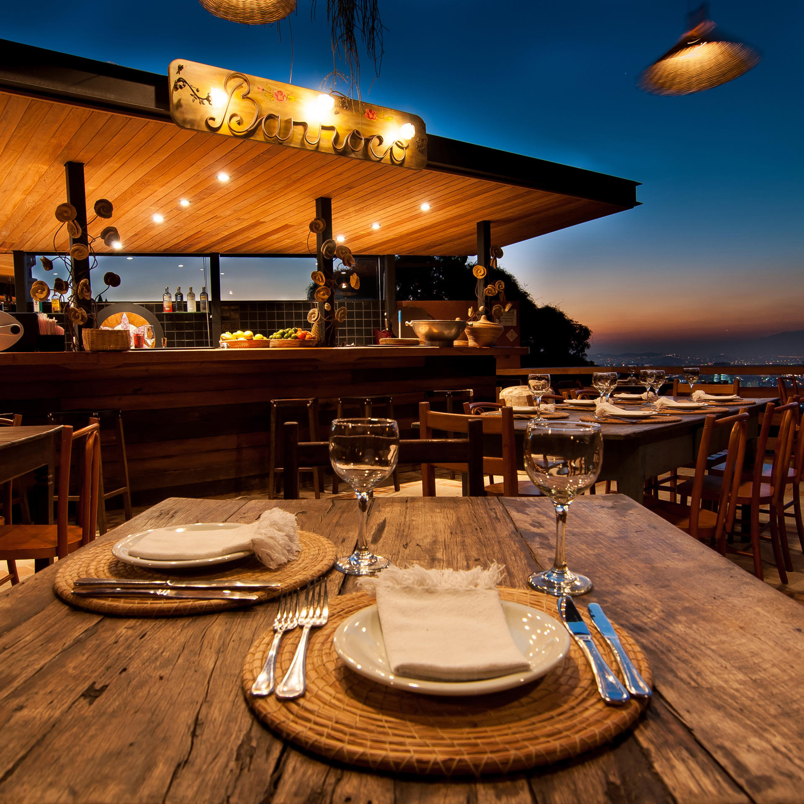
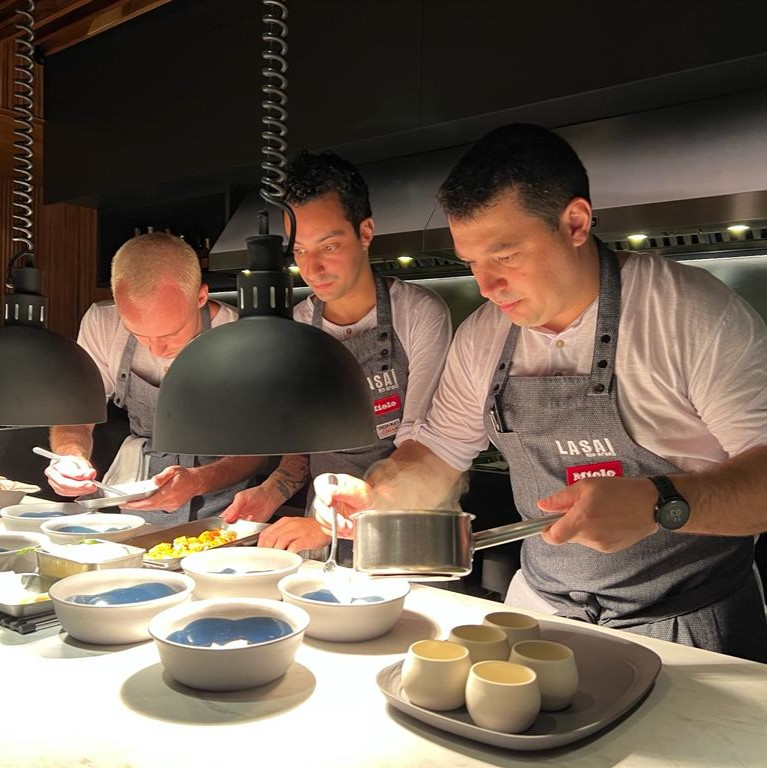
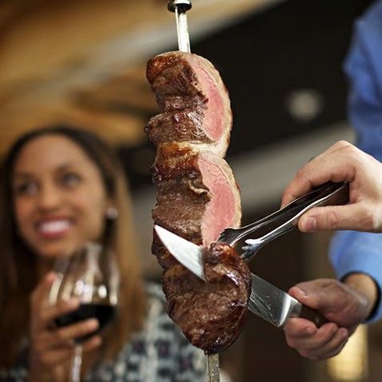

Why Rio?
A vibrant city
Rio de Janeiro is a vibrant city known for its stunning beaches, lively culture, and iconic landmarks. From the breathtaking views atop Sugarloaf Mountain to the world-famous Copacabana Beach, Rio offers a unique blend of natural beauty and urban energy. Whether you're exploring the historic neighborhoods, dancing to samba rhythms, or enjoying the vibrant nightlife, Rio de Janeiro promises an unforgettable experience for every traveler.
Restaurants
My favorite eats in Rio

Aprazível
A stunning hillside restaurant in Santa Teresa known for its incredible Brazilian cuisine and breathtaking views of Rio.
Address:
R. Aprazível, 62 - Santa Teresa
What I like about it
The atmosphere is unmatched. It feels like dining in a tropical garden, and the views at sunset are unreal.

Lasai
A Michelin-starred restaurant offering a modern take on Brazilian cuisine using fresh, locally sourced ingredients.
Address:
Rua Conde de Irajá, 191 - Botafogo
What I like about it
It’s a full experience, not just a meal. Every dish is creative and beautifully presented.

Fogo de Chão
A famous Brazilian steakhouse serving traditional churrasco with a wide selection of meats carved tableside.
Address:
Praia de Botafogo, 400 - Botafogo
What I like about it
It’s the ultimate Brazilian dining experience. Come hungry because the endless meats and sides keep coming.